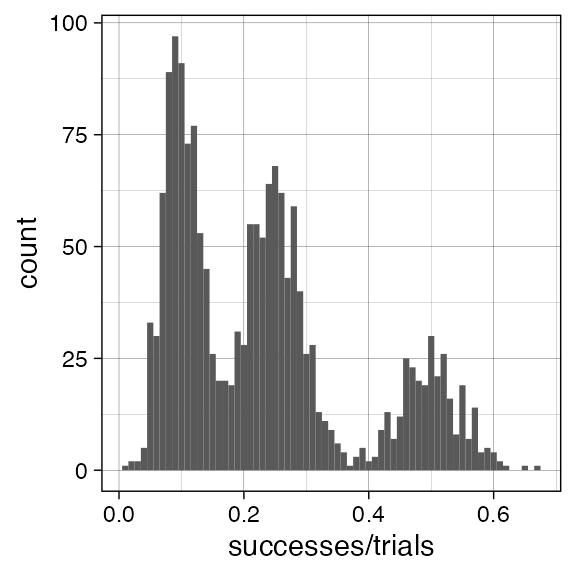
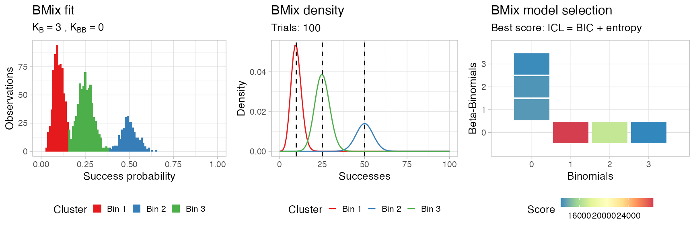

library(BMix)
#> Warning: replacing previous import 'cli::num_ansi_colors' by
#> 'crayon::num_ansi_colors' when loading 'BMix'
#> Warning: replacing previous import 'crayon::%+%' by 'ggplot2::%+%' when loading
#> 'BMix'
#> ✓ Loading BMix, 'Binomial and Beta-Binomial univariate mixtures'. Support : <https://caravagnalab.github.io/BMix/>Mixture models with BMix
Simulated data
We generate some simple data obtained from \(k=3\) Binomial mixtures with Binomial probability \(p\in\{ 0.5, 0.25, 0.1\}\), drawing \(300\), \(700\) and \(700\) samples each. The number of trials is fixed to \(100\).
data = data.frame(
successes = c(
rbinom(300, 100, .5), # First component - 300 points, peak at 0.5
rbinom(700, 100, .25), # Second component - 700 points, peak at 0.25
rbinom(700, 100, .1)), # Third component - 700 points, peak at 0.1
trials = 100)
print(head(data))
#> successes trials
#> 1 55 100
#> 2 43 100
#> 3 53 100
#> 4 55 100
#> 5 51 100
#> 6 59 100
require(ggplot2)
#> Loading required package: ggplot2
ggplot(data, aes(successes/trials)) + geom_histogram(binwidth = 0.01) + theme_linedraw()
Binomial mixtures
Fitting the data
Fitting is done with function bmixfit, the default parameters test a number of configurations of Binomial components, but sets to \(0\) the number of Beta-Binomial components.
# Default parameters
x = bmixfit(data, K.Binomials = 1:3, K.BetaBinomials = 0)
#>
#> ── BMix fit ────────────────────────────────────────────────────────────────────
#> ℹ Binomials k_B = 1, 2, and 3, Beta-Binomials k_BB = 0; 6 fits to run.
#> ℹ Bmix best fit completed in 0.02 mins
#> ── [ BMix ] My BMix model n = 1700 with k = 3 component(s) (3 + 0) ─────────────
#> • Clusters: π = 42% [Bin 2], 41% [Bin 3], and 18% [Bin 1], with π > 0.
#> • Binomial Bin 1 with mean = 0.497648592976857.
#> • Binomial Bin 2 with mean = 0.101526812716731.
#> • Binomial Bin 3 with mean = 0.248839045631862.
#> ℹ Score (model selection): ICL = 13247.2.
# Maybe one could compare x to this
# y = bmixfit(data, K.Binomials = 0, K.BetaBinomials = 1:2)The fit is an object of class bmix which has S3 methods available.
print(x)
#> ── [ BMix ] My BMix model n = 1700 with k = 3 component(s) (3 + 0) ─────────────
#> • Clusters: π = 42% [Bin 2], 41% [Bin 3], and 18% [Bin 1], with π > 0.
#> • Binomial Bin 1 with mean = 0.497648592976857.
#> • Binomial Bin 2 with mean = 0.101526812716731.
#> • Binomial Bin 3 with mean = 0.248839045631862.
#> ℹ Score (model selection): ICL = 13247.2.Note: The input data is not stored inside the fit, you have keep it and pass it to plotting functions. Keep it consistent, the package is not doing any checks about the input.
You have getters to access the clusters (as tibble) and the fit parameters.
# Augment data with cluster labels and latent variables
Clusters(x, data)
#> # A tibble: 1,700 × 6
#> successes trials cluster `Bin 1` `Bin 2` `Bin 3`
#> <int> <dbl> <chr> <dbl> <dbl> <dbl>
#> 1 55 100 Bin 1 1.00 2.46e-24 1.05e-10
#> 2 43 100 Bin 1 0.999 2.42e-13 5.39e- 4
#> 3 53 100 Bin 1 1.00 1.67e-22 1.38e- 9
#> 4 55 100 Bin 1 1.00 2.46e-24 1.05e-10
#> 5 51 100 Bin 1 1.00 1.14e-20 1.81e- 8
#> 6 59 100 Bin 1 1.00 5.34e-28 6.07e-13
#> 7 44 100 Bin 1 1.00 2.93e-14 1.49e- 4
#> 8 50 100 Bin 1 1.00 9.37e-20 6.56e- 8
#> 9 52 100 Bin 1 1.00 1.38e-21 4.99e- 9
#> 10 49 100 Bin 1 1.00 7.72e-19 2.38e- 7
#> # … with 1,690 more rows
# Obtain for every fit component the mean and its overdispersion.
# Binomial components have 0 overdispersion by definition.
Parameters(x)
#> # A tibble: 3 × 3
#> cluster mean overdispersion
#> <chr> <dbl> <dbl>
#> 1 Bin 1 0.498 0
#> 2 Bin 2 0.102 0
#> 3 Bin 3 0.249 0Plotting the fits
You can plot the clustering assignments (hard clustering).
plot_clusters(x, data)
You can plot the density, in frequency space. For this a number of trials needs to be fixed; by default BMix takes the median number of trials in the input data, but you can decide to use any other interger number.
plot_density(x, data)
You can visualise the result of the model selection grid as a heatmap; the best model is the one that minimizes the chosen score, which is by default the Integrated Classification Likelihood, an extension of the Bayesian Information Criterion that accounts for the entropy of the latent variables.

Then plot assembles all these plots using the cowplot package.
BMix::plot.bmix(x, data) 
Beta-Binomial mixtures
If you want to test the same model with only Beta-Binomial components you can run function bmixfit as follows.
# Custom parameters
x = bmixfit(data,
K.Binomials = 0,
K.BetaBinomials = 1:3)
#>
#> ── BMix fit ────────────────────────────────────────────────────────────────────
#> ℹ Binomials k_B = 0, Beta-Binomials k_BB = 1, 2, and 3; 6 fits to run.
#> ℹ Bmix best fit completed in 0.15 mins
#> ── [ BMix ] My BMix model n = 1700 with k = 3 component(s) (0 + 3) ─────────────
#> • Clusters: π = 41% [BBin 3], 41% [BBin 1], and 18% [BBin 2], with π > 0.
#> ℹ Score (model selection): ICL = 13091.42.
# Show outputs
print(x)
#> ── [ BMix ] My BMix model n = 1700 with k = 3 component(s) (0 + 3) ─────────────
#> • Clusters: π = 41% [BBin 3], 41% [BBin 1], and 18% [BBin 2], with π > 0.
#> ℹ Score (model selection): ICL = 13091.42.
BMix::plot.bmix(x, data) 
Comparing mixtures
You can compare models with both type of components.
# Custom parameters
x = bmixfit(data,
K.Binomials = 0:3,
K.BetaBinomials = 0:3)
#>
#> ── BMix fit ────────────────────────────────────────────────────────────────────
#> ℹ Binomials k_B = 0, 1, 2, and 3, Beta-Binomials k_BB = 0, 1, 2, and 3; 12 fits to run.
#> ℹ Bmix best fit completed in 0.14 mins
#> ── [ BMix ] My BMix model n = 1700 with k = 3 component(s) (3 + 0) ─────────────
#> • Clusters: π = 42% [Bin 1], 40% [Bin 3], and 18% [Bin 2], with π > 0.
#> • Binomial Bin 1 with mean = 0.246907871295258.
#> • Binomial Bin 2 with mean = 0.498232166963041.
#> • Binomial Bin 3 with mean = 0.0991531012813286.
#> ℹ Score (model selection): ICL = 13016.61.
# Show outputs
print(x)
#> ── [ BMix ] My BMix model n = 1700 with k = 3 component(s) (3 + 0) ─────────────
#> • Clusters: π = 42% [Bin 1], 40% [Bin 3], and 18% [Bin 2], with π > 0.
#> • Binomial Bin 1 with mean = 0.246907871295258.
#> • Binomial Bin 2 with mean = 0.498232166963041.
#> • Binomial Bin 3 with mean = 0.0991531012813286.
#> ℹ Score (model selection): ICL = 13016.61.
BMix::plot.bmix(x, data) 